1. Familiarity influenced adoption
Some analysts were hesitant to move because they were comfortable with their existing tools, even when the new platform offered similar capabilities. With active project deadlines, they had not had time to try it.
I'm Sonakshi. I trained as an ML engineer, worked as a product manager, and now design products where people meet technical systems: drone mapping, brain imaging and AI.
Two case studies from specialist products.
I mapped how GIS analysts turn drone surveys into maps, watched where a new platform slowed them down, and built the testing process that caught bugs before release.
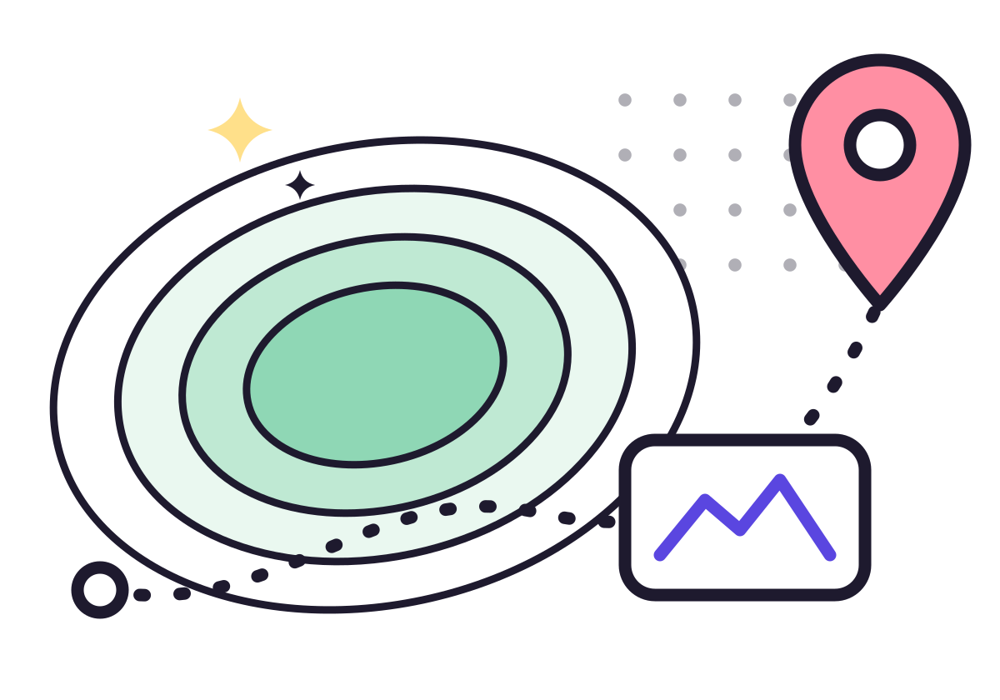
At a neuroimaging startup I learned to read brain maps and tractography, designed the reports clinicians receive, and wrote the requirements engineering built from.
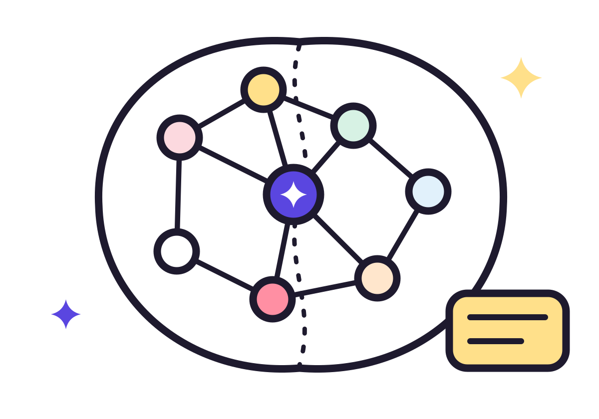
I sit between the people who build technical systems and the people who have to use them.
I studied computer science at PES University in Bangalore, where I built ML pipelines and co-authored an IEEE paper on cyclone prediction. Then I moved toward the people side: product management at a drone-mapping company and product design at a neuroimaging startup.
I'm now doing a master's in Human-Computer Interaction at the University of Maryland, where I'm a Grand Challenges Graduate Scholar in the AI and Knowledge Community cohort. I grew up between Pennsylvania and Bangalore, which taught me early that the same thing rarely reads the same way to two audiences.
I'm open to internships and collaborations in product design, UX research and human–AI interaction.
Improving a geospatial platform through workflow research, observation and testing.
Confidentiality note. To respect company confidentiality, this case study focuses on my research methods, processes and learnings. No proprietary company data, internal documents or confidential product information has been included. Any visuals or examples are recreated for illustrative purposes.
GIS analysts were moving from legacy geospatial tools to the company's new platform. Their work involved complex, multi-step processes, so the product team needed a clearer picture of the end-to-end workflow.
Understand the analysts' end-to-end workflow and the role each tool and output played within it.
I ran user research sessions using a master–apprentice approach, observing analysts as they worked and asking questions in context. I introduced myself as a PM intern who wanted to learn how drones are used to create orthomosaics. The analysts walked me through the process, and I asked clarifying questions wherever I got stuck.
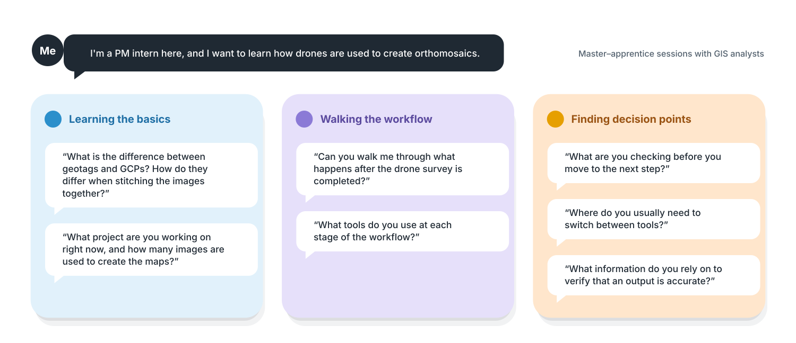
The research produced a clearer picture of the analysts' workflow, dependencies and decision points. It gave the product team a stronger foundation for designing the new platform around real user processes.
I mapped the workflow from drone data collection through photogrammetric processing, point cloud generation, DSMs, orthomosaics and GIS analysis.
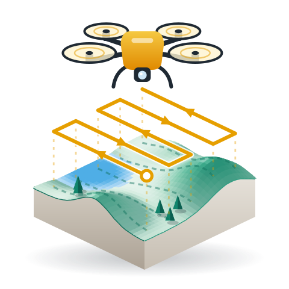
1 Data collectionField operators fly drones over a survey area and capture overlapping aerial images.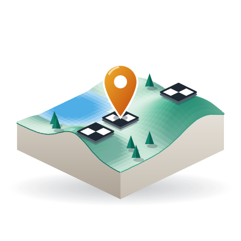
2 Positioning & reference dataImage geotags are refined using PPK data, while Ground Control Points provide surveyed reference locations.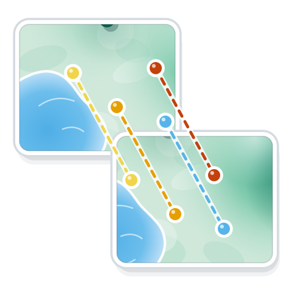
3 Photogrammetric processingOverlapping images are aligned using feature matching and reference data.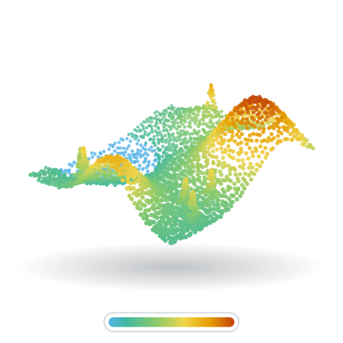
4 Point cloud generationThe imagery becomes a dense 3D point cloud of terrain and visible objects.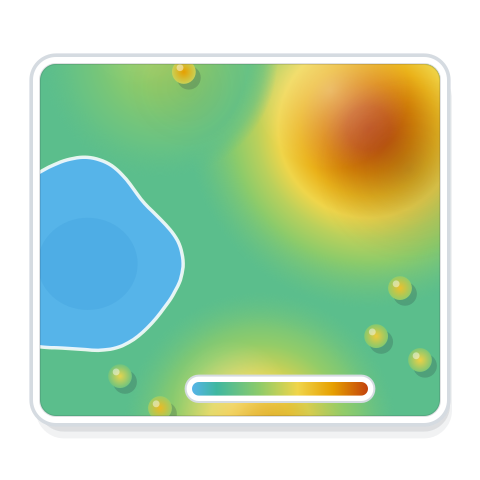
5 Surface modelingThe point cloud generates outputs such as a Digital Surface Model (DSM).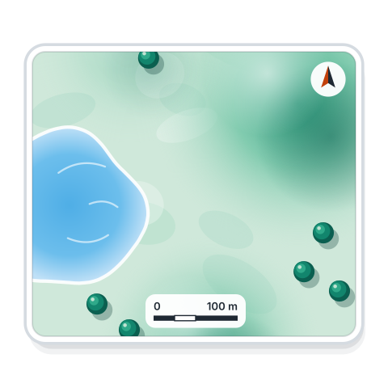
6 Orthomosaic generationImages are orthorectified and combined into a geographically accurate aerial map.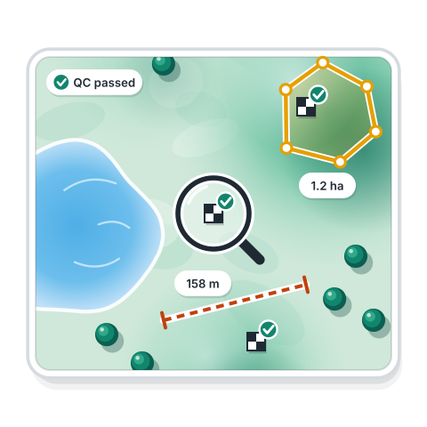
7 GIS analysis & quality checksAnalysts review outputs, verify accuracy, take measurements and prepare deliverables.As GIS analysts began using the new platform, the product team needed to understand how it fit into existing workflows, what encouraged adoption, and where the experience created friction during real tasks.
Observe analysts using the platform to identify usability issues, workarounds and points of confusion.
I conducted multiple observation sessions in the GIS lab while analysts completed their day-to-day work. I focused on understanding:
I documented usability issues and bugs as they surfaced and communicated technical problems directly to the engineering team.
Some analysts were hesitant to move because they were comfortable with their existing tools, even when the new platform offered similar capabilities. With active project deadlines, they had not had time to try it.
Analysts who had adopted the platform were happy with its simplicity, especially the processing interface.
Analysts switched between the new platform and older tools, relying on legacy tools for capabilities that were still in development.
The sessions surfaced bottlenecks, including bugs I documented and reported to engineering immediately, and the four opportunities shown here.
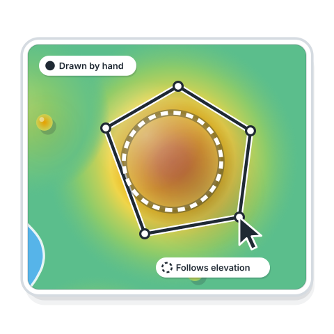
Volume calculationUsers wanted the area of interest to be selected automatically based on elevation levels.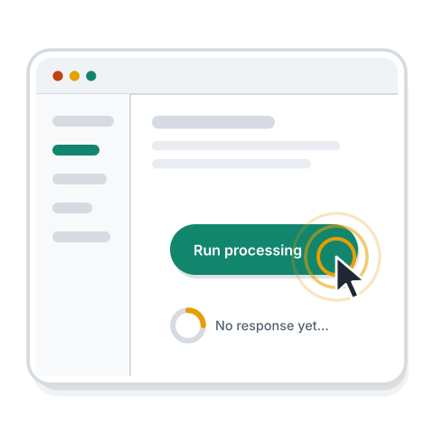
Interface responsivenessSlow response to clicks interrupted interactions.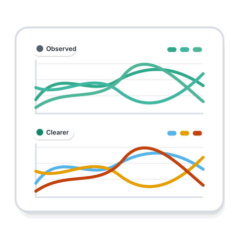
Elevation profileGraph colors were too similar. Users wanted more vibrant colors to tell data series apart.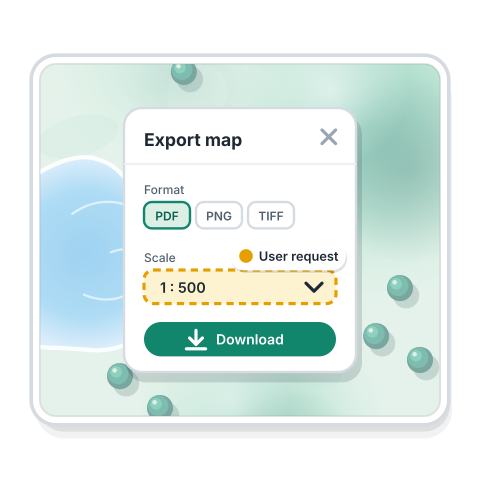
Map downloadsUsers wanted to choose the zoom scale of exported maps.The sessions showed that platform adoption depended on more than feature availability. Familiarity, project deadlines, usability and workflow compatibility also shaped analysts' willingness to transition.
I documented the issues identified and communicated bugs to engineering, helping the team understand where users experienced friction during real work.
The analytics platform was being developed rapidly, which meant new features frequently introduced bugs and edge cases. These needed to be caught in the UAT environment before changes were pushed to production.
The team needed a more consistent way to validate functionality before release and to avoid high-priority issues surfacing late in the release cycle.
Create a structured UAT process to systematically test core workflows, document issues, and help the team prioritize bugs based on their impact on users and day-to-day work.
I helped establish a systematic testing process built around two components: a test-case sheet for finding issues, and a priority matrix for triaging them.
I created and maintained a structured test-case sheet to document:
This gave the product and engineering teams a consistent way to validate functionality, track test coverage and follow issues across releases.
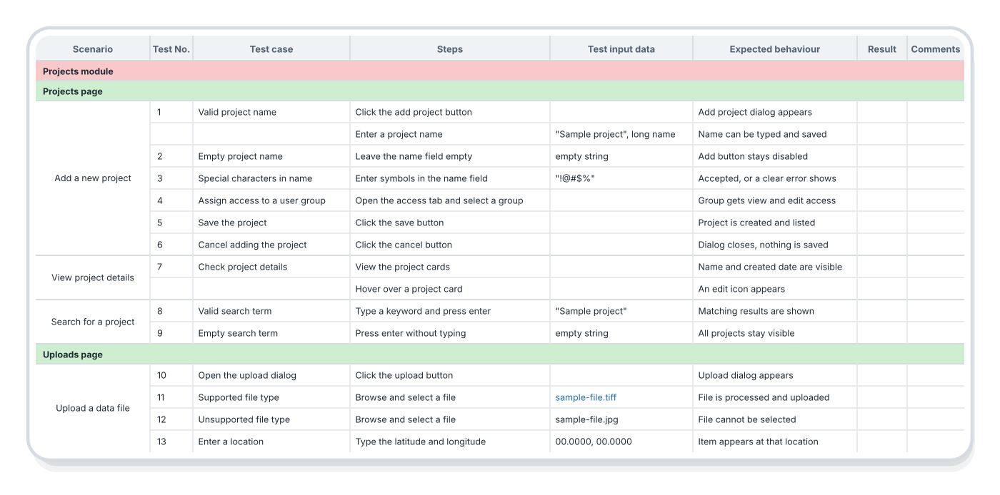
I used an urgency–importance matrix to separate critical failures from lower-impact usability issues and enhancements. It gave the team a simple framework for discussing which issues needed immediate attention and which could be addressed later.
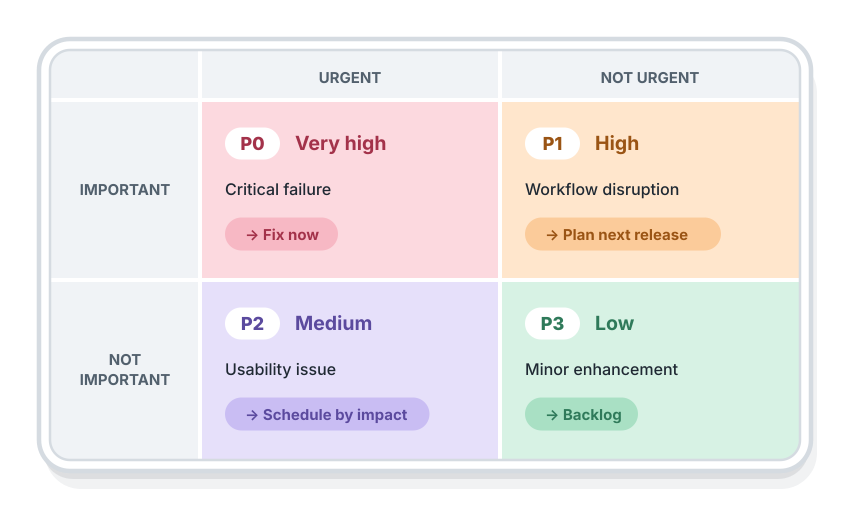
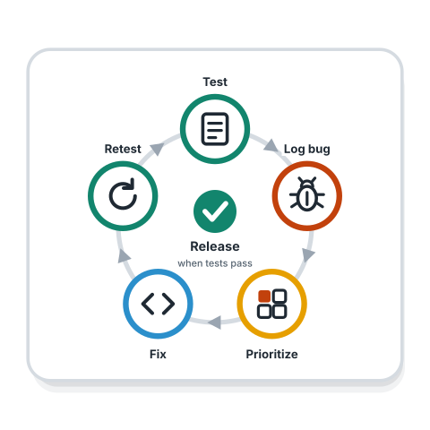
The structured UAT process helped catch high-priority issues earlier, improved visibility into test coverage, and gave the team a clearer, more consistent way to triage bugs.
It also reduced last-minute pressure on engineering before release by making issues easier to document, reproduce and address.
Learning a clinical neuroimaging domain, designing brain-mapping reports, and defining product requirements for a clinical neuroimaging platform.
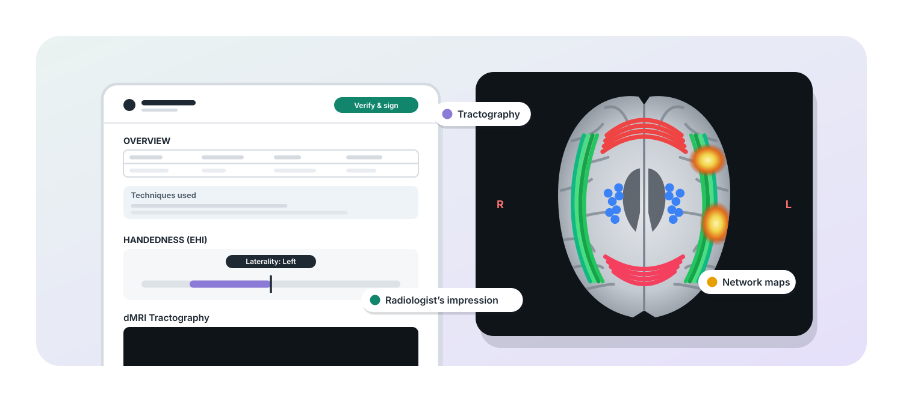
Confidentiality note. To respect company confidentiality, this case study focuses on my methods, processes and learnings. No proprietary company data, internal documents or confidential product information has been included. Any visuals or examples are recreated for illustrative purposes.
I was designing for a highly specialized clinical neuroimaging product. Before making design decisions, I needed to understand what the brain maps, tractography and other outputs actually represented.
Build enough understanding of the neuroimaging workflow and its outputs to design for clinical users, without treating the data as generic interface content.
I worked directly with fMRI-based neuroimaging data, using MRIcroGL and MRView to inspect brain maps and tractography. Through this hands-on work, I learned how different neuroimaging outputs are represented and interpreted.
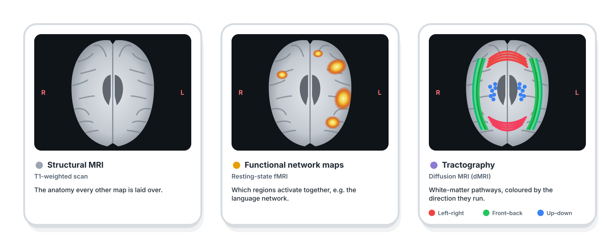
This understanding informed my later product and report-design decisions. It let me make choices about grouping, labeling and hierarchy based on how clinicians read the outputs.
Brain-mapping reports contained highly technical information: tract visualizations, network maps, statistical measures, radiologist interpretation and explanatory material. All of it needed to be presented coherently to clinical users.
Design report layouts that made complex neuroimaging information easier to navigate and interpret.
I designed clinical brain-mapping reports in Adobe InDesign. I established the information hierarchy and layouts for tract visualizations, network maps, z-scores, radiologist impression fields and contextual explainers.
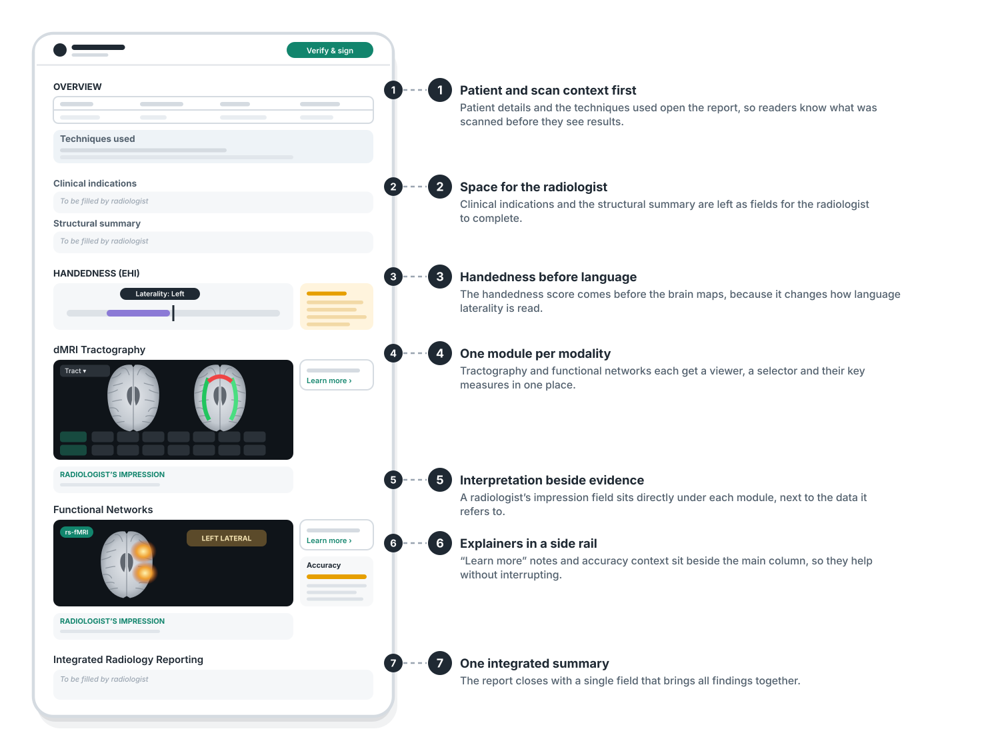
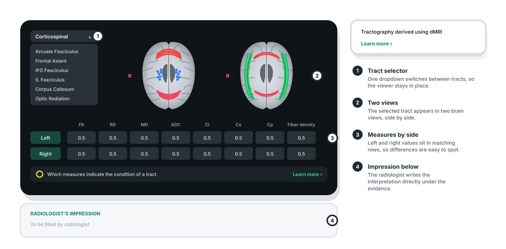
The platform had a large number of interconnected workflows across different user roles. These included hospital administration, member management, studies, onboarding, patient uploads and neuroimaging outputs.
Create clear product requirements that translated the interface designs into expected behavior for engineering.
I defined user stories and acceptance criteria across 26+ screens. For each screen, I documented what it should display, how users should move through the flow, what actions should be available, and how the system should respond.
The requirements covered hospital administration, inviting and managing members, study setup, onboarding, DICOM upload, patient case management, and output selection for network maps and tractography.
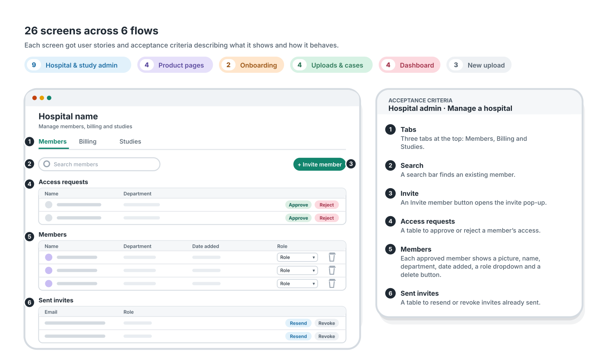
I created a shared requirements reference that gave engineering clearer implementation expectations across a complex set of screens and user flows.
The work followed one line: understand the neuroimaging domain, design the clinical reports, then define the product requirements. Knowing what the outputs meant shaped how the reports were organized, and designing the reports and screens made it possible to specify how the product should behave.